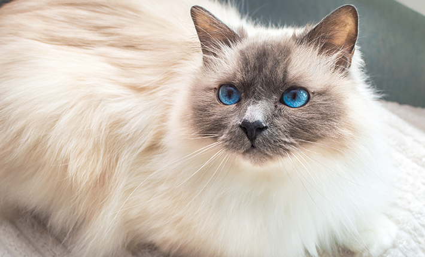

Le Chat Birman
Le Birman, avec son pelage soyeux et son regard expressif, est un chat
doux et affectueux, idéal pour les familles recherchant un compagnon calme
et attentionné.

Description
Le chat Birman est une race élégante et pleine de douceur. Il est
souvent décrit comme un "chat sacré", non seulement en raison de son
apparence majestueuse, mais aussi à cause de sa personnalité calme
et affectueuse. Ce chat se distingue par son pelage long, soyeux et
lumineux, de couleur claire, et ses points foncés sur les pattes, le
visage, les oreilles et la queue, qui lui donnent une allure
particulière. Le Birman est un chat très sociable, qui apprécie la
compagnie de ses maîtres et peut s’entendre avec les autres animaux.
Son caractère doux et sa nature calme en font un compagnon idéal
pour les familles, notamment celles avec des enfants.
Anecdote
Saviez-vous que le Birman est souvent associé à des légendes
mystiques ? Selon une ancienne histoire, les premiers Birmans
seraient apparus dans un temple birman, et seraient les compagnons
sacrés des prêtres. On raconte qu'un Birman a protégé un prêtre lors
d’un raid, et que tous les chats de la tribu ont ensuite adopté son
apparence et sa couleur, transmettant cette beauté unique à la race.
- Retour à la liste des chats